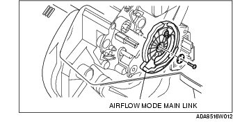

Airflow mode main link removal/installation
1. Disconnect the negative battery cable.
2. Disconnect the airflow mode wire. (See CLIMATE CONTROL UNIT REMOVAL.)
Disconnect the airflow mode wire. (See CLIMATE CONTROL UNIT INSTALLATION.)
3. Remove the airflow mode rod (1).
4. Remove the airflow mode main link.

5. Install in the reverse order of removal.
6. Adjust the airflow mode wire. (See CLIMATE CONTROL UNIT WIRE ADJUSTMENT.)
Airflow Mode Main Link Installation Note
- • Apply only the specified grease to links. Otherwise abnormal noise or improper operation may result.
1. Push and hold each airflow mode sub link in the direction of the arrow.

2. Set the airflow mode main link to the A/C unit as shown in the figure.
3. Press the airflow mode main link lightly to the A/C unit it in the direction shown by the arrow, then set the projections of each airflow mode sub link into the grooves of the airflow mode main link.
4. Rotate airflow mode main link and verify that each mode is accessed properly.